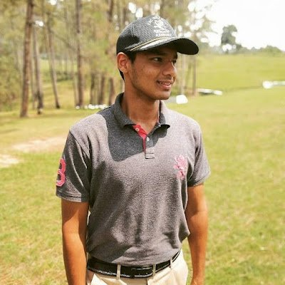
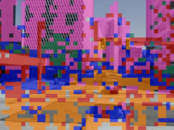

|
Jay Karhade Generalizing Perception for SLAM Hello! I'm a M.S. Robotics student at CMU, where I'm advised by Sebastian Scherer at the AirLab. My goal is to build learning mechanisms for generalizable SLAM algorithms . Specifically, I wish to infer universal representations that are grounded with the laws of our physical world. I am currently studying methods to distill information from 2D pre-trained models for 3D data, and developing self-supervised algorithms to enable multi-modal localization in multi-robot SLAM. Prior to CMU, I worked on AI for healthcare at BITS Pilani,Hyderabad and was fortunate to work on Neural Rendering at ARC, NUS. I am fortunate to collaborate with Krishna Murthy, Sourav Garg, Shibo Zhao, Prof. Marcelo Ang, Prof. Tripathy and other awesome researchers. Email / CV / Google Scholar / Twitter / Github |
 |
{kind=link}
News
|
Research |
|

|
AnyLoc: Towards universal Place Recognition
Nikhil Keetha*, Avneesh Mishra*, Jay Karhade*, Krishna Murthy Jatavallabhulah, Sebastian Scherer, K. Madhava Krishna, Sourav Garg, RAL, 2023 (Under Review) project page / video / arXiv Combining self-supervised features from DINOv2 with unsupervised aggregation techniques to achieve 400% improvement on VPR and emergence of semantic domains. |

|
SubT-MRS: A Subterranean, Multi-Robot, Multi-Spectral and Multi-Degraded Dataset for Robust SLAM
arXiv Sub-T and Multi-Robot Dataset for SLAM applications. Currently part of ICCV 2023 Challenge. |
|
Last updated on 3rd September 2023. Website Template taken from Jon barron. |